Multi-fingered robot hands promise human-level dexterity, but collecting large-scale dexterous manipulation data remains difficult. Human demonstrations offer a scalable alternative to teleoperation, providing strong priors on object interaction and contact strategy. Recent sim-to-real RL methods exploit these priors, yet they typically lack rewards that explicitly incentivize precise contact, which hurts real-world performance. They also generalize poorly to unseen object instances.
We propose DemoMimic (Dexterous Motion Mimic), a policy that manipulates objects by focusing on their geometry local to the contact points. Its contact-centric rewards encourage precise contact and improve sim-to-real consistency, yielding a single real-world policy that transfers across objects of varying shape, scale, mass, and friction wherever local contact structure is preserved. In real-world experiments, DemoMimic reaches 71% average success across 16 objects, four tasks, and two hand embodiments, with the smallest sim-to-real gap among baselines.
A single DemoMimic policy per task generalizes across unseen objects with different material, weight, and size.
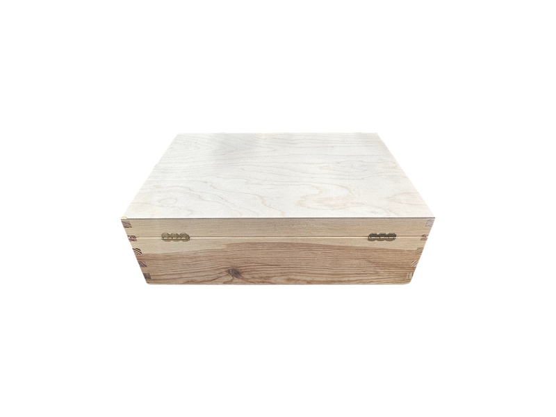
Wooden Box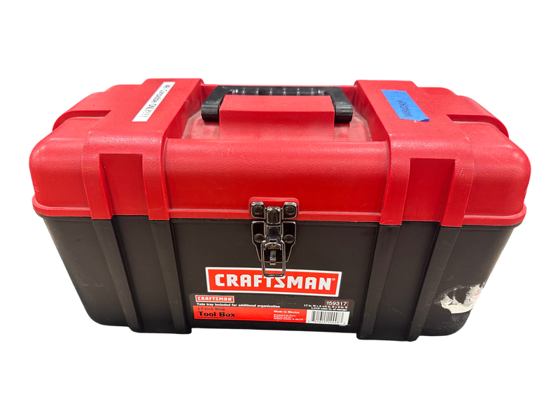
Toolbox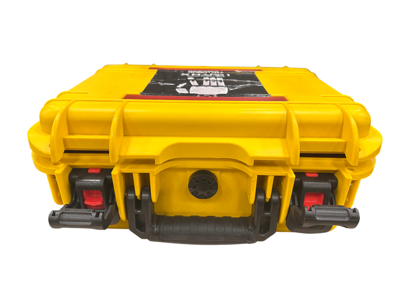
Robot Hand Box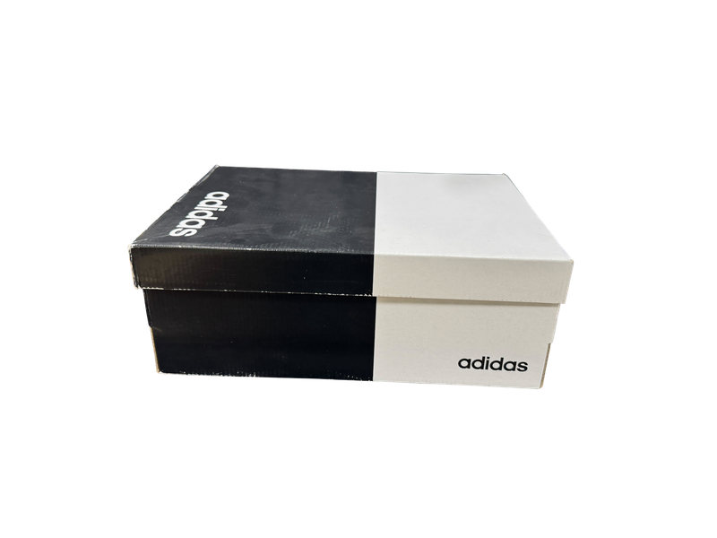
Shoe BoxNote: The Robot Hand Box has a lower success rate because its lid geometry differs from what was seen in simulation.
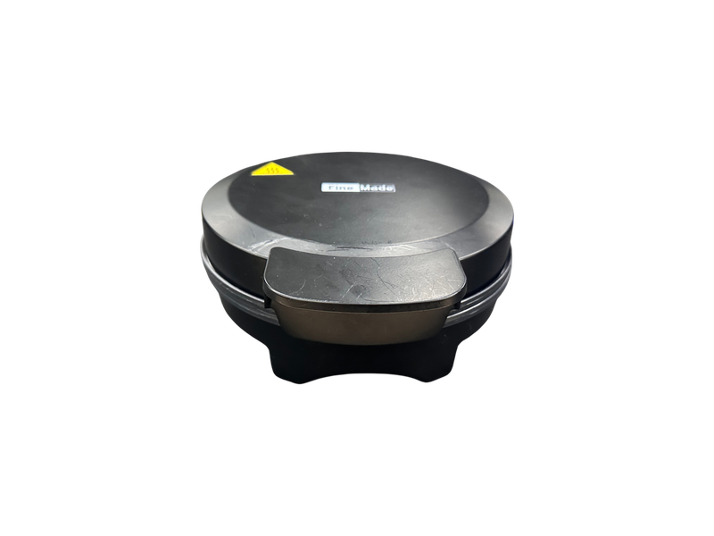
Finemade Waffleiron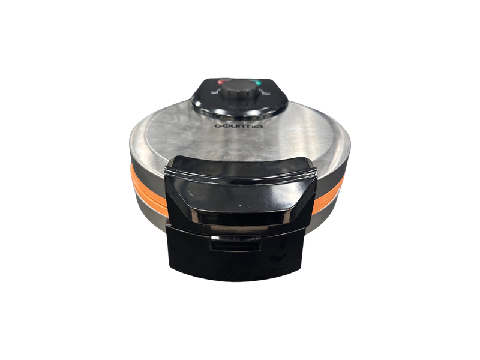
Gourima Waffleiron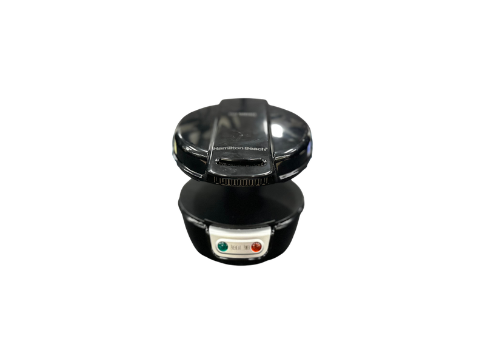
Breakfast Maker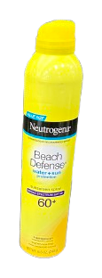
Sunscreen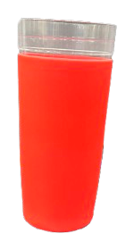
Souvenir Cup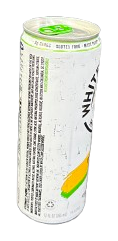
Canned Drink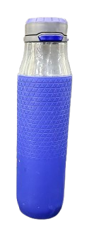
Water Bottle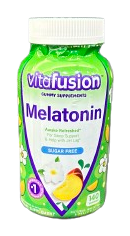
Vitamin Container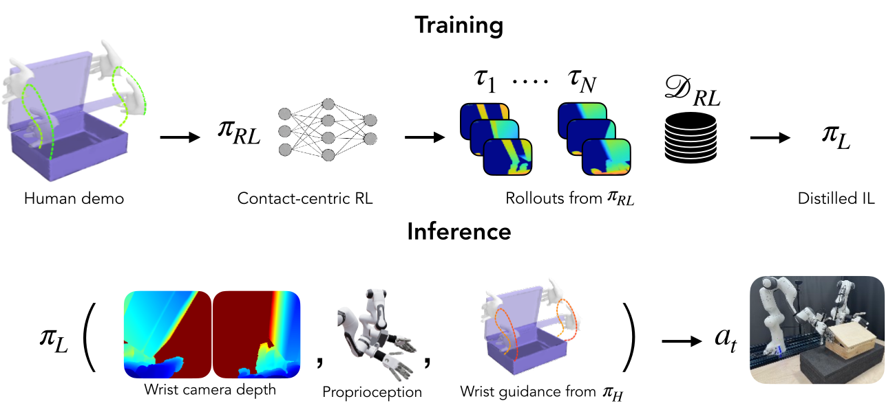
DemoMimic first uses a single human demonstration to train an RL policy, πRL, in simulation, leveraging extensive domain randomization and a contact-centric reward design for better sim-to-real transfer. We then distill πRL into a depth-conditioned imitation policy, πIL, by rolling out the RL policy to generate an offline dataset. At inference time, πIL is additionally conditioned on a coarse wrist trajectory produced by a separate high-level policy, πH, which guides the approach phase at the start of the rollout. The robot then completes the task with closed-loop feedback from depth and proprioception.
Contact-centric rewards are what make simulated contact transfer better to hardware. The Alignment Reward (AR) aligns each contacting hand link’s surface normal with the object’s, producing stable, well-conditioned contacts that don’t exploit simulator artifacts. The Sustained Contact Reward (SCR) rewards maintaining continuous contact within demonstration windows, growing quadratically with the contact streak. This prevents the intermittent releases that pass in simulation but cause irreversible drops on hardware. Baselines (DexMachina*, HERMES*) and reward ablations perform well in simulation, but their real-world success rates drop sharply. The contact rewards keep real-world performance close to simulation.